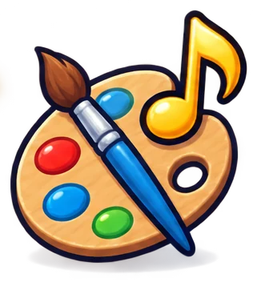
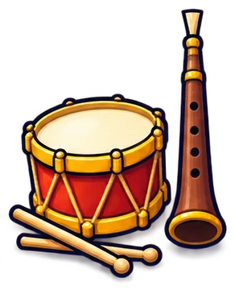
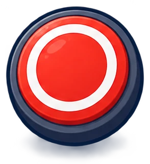
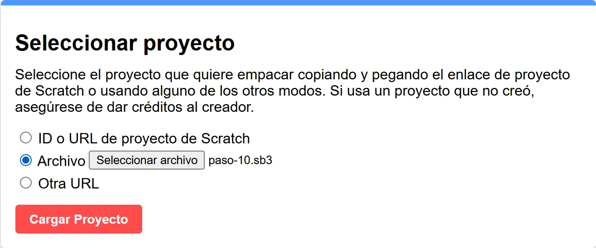
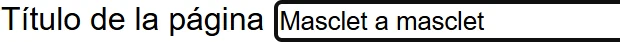
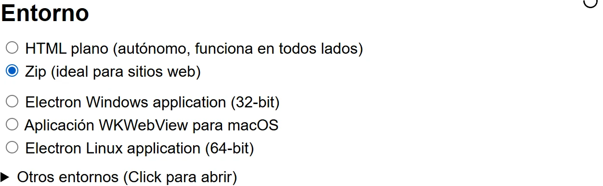

Módulo 5
Sesiones, roles, cómo hacerlo vuestro, publicar en itch.io y grabar el vídeo.
←→ para moverte · B buscar · P pantalla completa
Foto: Rafa Esteve · CC BY-SA 4.0 · Wikimedia Commons
En el aula
| Sesión | Qué hace la clase | En esta formación |
|---|---|---|
| 1 | Qué es Up! Steam. Jugar a Masclet a masclet y a otros juegos de ritmo. | Módulo 0 |
| 2 y 3 | Elegir tradición y mecánica. Ficha de idea. Prototipo en papel. | Módulo 1 |
| 4 | Bocetos en papel del fondo y los personajes. El docente los pasa por la IA. | Módulo 2 |
| 5 a 7 | Scratch: un petardo (pasos 1 a 5). | Módulo 3 · fichas 1 a 5 |
| 8 y 9 | Clones, música y cronómetro (pasos 6 a 8). | Módulo 4 · fichas 6 a 8 |
| 10 | Modo pirotécnico: cada alumno graba su mascletà (paso 9). | Módulo 4 · ficha 9 |
| 11 | Remate (paso 10) y pruebas con otra clase. | Módulo 4 · ficha 10 |
| 12 y 13 | Página en itch.io. Guion, grabación y montaje del vídeo. | Módulo 5 |
Sesiones de 50 minutos. Con un juego distinto al de la formación, las sesiones de Scratch pueden ser algunas más.
En el aula
Equipos de 6 a 12. Que todo el mundo tenga una tarea clara, y que los roles roten.
2 o 3 personas. Montan los pasos en Scratch.

Bocetos, disfraces y fondos. Retocan en el editor de Scratch.

Eligen o graban la música y los efectos.

Graban los mapas con el modo pirotécnico. Todo el equipo puede hacer uno.
Juegan, buscan fallos y los apuntan. Invitan a otra clase.
Página de itch.io y vídeo. La portavoz es una chica, como piden las reglas.
En el aula
Si muchos centros presentan este mismo juego, ninguno destacará en innovación. Usad los pasos como base y cambiad lo que os haga únicos.
| Qué cambiar | Cómo | Dificultad |
|---|---|---|
| La música | Grabad a la banda del pueblo o a un dolçainer y grabad los tiempos con el modo pirotécnico. | Fácil |
| El lugar | Un fondo con vuestra plaza, vuestra falla o vuestra calle. | Fácil |
| Los mapas | Una mascletà por alumno: el juego tiene tantos niveles como el equipo. | Fácil |
| Lo que explota | Instrumentos de una banda, cohetes de una cordà, tambores de una tamborrada… | Media |
| Lo que se aprende | Tarjetas con datos de la tradición entre nivel y nivel. | Media |
| La tradición entera | Otra idea del módulo 1 con la misma forma de trabajar. | Alta |
Publicar · 1 de 2
Up! Steam recoge los juegos en itch.io, que no abre los .sb3. Primero se convierte el juego con TurboWarp Packager: gratis, en el navegador y en castellano.
Entra en packager.turbowarp.org, elige Archivo, selecciona el .sb3 y pulsa Cargar Proyecto.

En Opciones del Reproductor, escribe el título del juego.

Abajo, en Entorno, elige Zip (ideal para sitios web).

Pulsa Empacar. Se descarga un .zip con el juego dentro.
Publicar · 2 de 2
Con el .zip, a itch.io. Los menús están en inglés.
Publicar
Cuenta para el criterio de diseño y presentación.
Una imagen de portada y 3 o 4 capturas del juego: el inicio, la partida y el final.
Dos frases: qué hay que hacer y con qué (ratón, teclas). Que se active el sonido.
Qué es la mascletà (o vuestra tradición) y qué se aprende jugando: el valor educativo.
Centro, curso y roles. Sin apellidos ni fotos sin autorización.
Qué se hizo con IA y con qué herramienta. Música y sonidos: de dónde salen.
itch.io deja cambiar los colores y el fondo de la página. Usad los del juego.
El vídeo
Es obligatorio: sin vídeo, el proyecto no se evalúa. Vale el 25 % de la nota.
| Tiempo | Qué se cuenta |
|---|---|
| 0:00 | La portavoz presenta el equipo y el juego. |
| 0:20 | La tradición: qué es y por qué la elegimos. |
| 0:45 | El juego en marcha: una partida con sonido. |
| 1:45 | Cómo lo hicimos: Scratch, la música, la IA y los roles. |
| 2:30 | Qué aprendimos y qué fue lo más difícil. |
| 2:50 | Cierre: el nombre del juego y dónde jugarlo. |
Windows: Win + Alt + R (Xbox Game Bar). Mac: Cmd + Mayús + 5.
Up! Steam tiene una guía de vídeo con CapCut en guias.upsteam.es.
Antes de entregar
| Criterio (25 %) | Qué podéis enseñar |
|---|---|
| Innovación | Lo que habéis cambiado: vuestra música, vuestro lugar, vuestras mascletàs. |
| Diseño y presentación | Un estilo coherente, el juego se entiende sin explicación y la página de itch.io está cuidada. |
| Técnica | Clones, listas, cronómetro y el modo pirotécnico. En el vídeo, enseñad un trozo del código y explicadlo. |
| Vídeo | Guion, buen sonido, la partida en marcha y la voz del equipo. |
Antes de entregar
Recursos
Fin de la formación
Empezad por la idea, probad pronto y simplificad. Masclet a masclet es solo un ejemplo: el mejor juego será el vuestro.